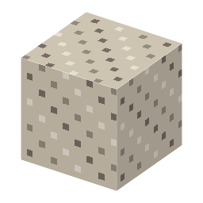

①子ども 石灰と火山灰でできた、2000年もつコンクリート。
②学生 生コン（消石灰＋凝灰岩2＋砂利2 → 4）が水にふれると固まる。つるはしで掘れる。
③大人 消石灰 Ca(OH)2 が火山灰（ポッツォラーナ）のケイ素・アルミニウムと水の中で反応して、水にとけない石のような物（ケイ酸カルシウムの水和物など）になる（ポッツォラン反応）。だから水中でも固まる。
④ガチ 128年ごろのローマのパンテオンの丸屋根は、鉄筋なしのコンクリートで、今も鉄筋なしでは世界最大級。海の中の港の壁は、海水と反応してできた結晶でむしろ強くなったと言われる ⚠️。
（作り方のレシピは無い：拾う・掘る・ほかの方法）
（このアイテムを使うレシピは無い）